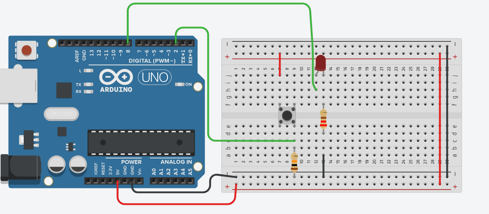
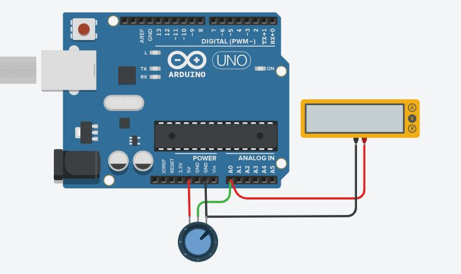
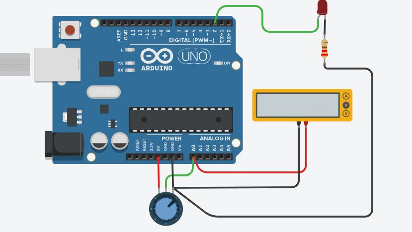
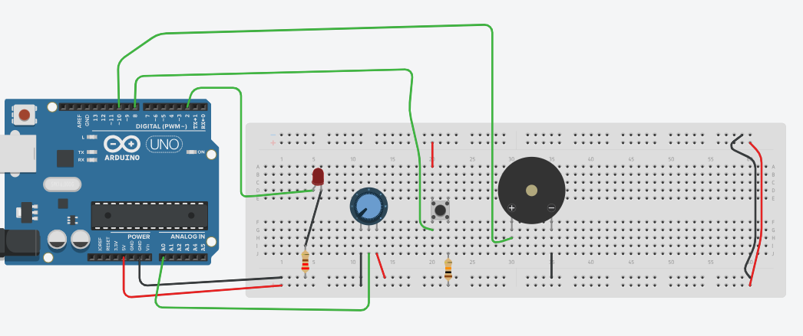
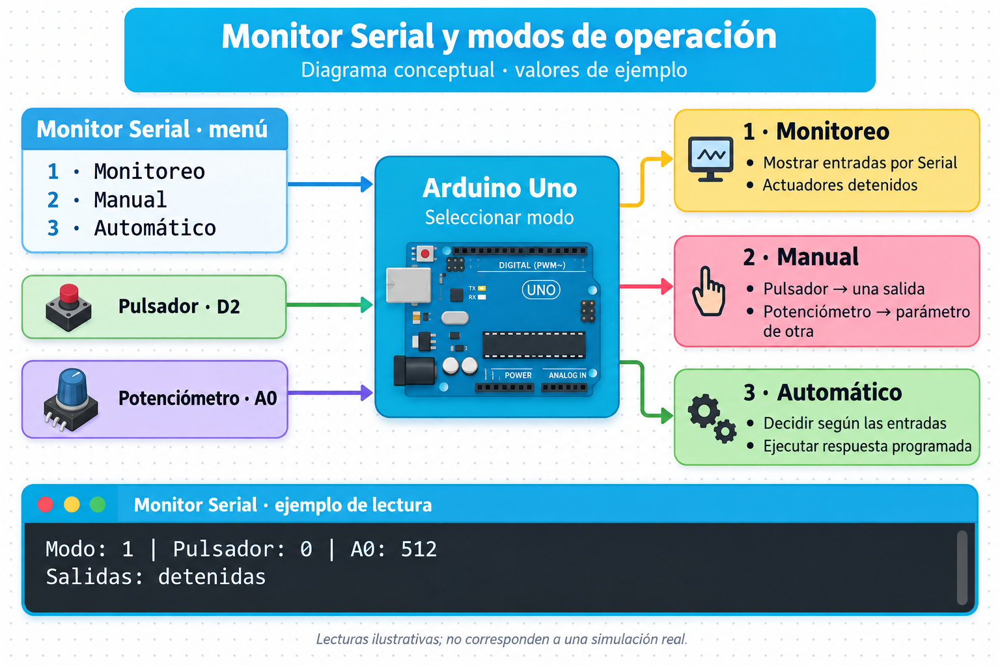

Ahora el programa debe responder al hardware
En la clase anterior ya trabajaste con salidas digitales, Monitor Serial, pulsadores, decisiones, antirrebote y funciones. En esta sesión usarás esos recursos para construir soluciones nuevas y comenzarás a integrar señales físicas de distinto tipo.
Construye primero el circuito y revisa alimentación, GND, polaridad y resistencias.
Escribe solo el bloque necesario para probar la etapa actual.
Simula, observa el circuito y usa el Monitor Serial antes de continuar.
Materiales virtuales de la clase
| Componente | Uso |
|---|---|
| Arduino Uno R3 + protoboard | Plataforma de control y montaje. |
| LED + resistencia de 220 Ω | Salida digital visible. |
| Pulsador + resistencia de 10 kΩ | Entrada digital con pull-down. |
| Potenciómetro | Entrada analógica variable. |
| Buzzer o servomotor | Actuador para el ejercicio integrador. |
| Monitor Serial | Comprobación de valores y selección de modos. |
Una etapa a la vez
En cada ejercicio trabajarás con cuatro acciones repetidas:
Agregar componentes, cablear y revisar conexiones.
Escribir únicamente lo necesario para probar esa etapa.
Modificar físicamente la entrada y observar la salida.
Registrar valores o comportamiento antes de integrar una nueva función.
Pulsador + LED + Monitor Serial
A. Montaje en Tinkercad
| Elemento | Conexión propuesta |
|---|---|
| LED | D8 → resistencia 220 Ω → ánodo del LED; cátodo → GND. |
| Pulsador | Un lado → 5 V; lado de señal → D2. |
| Pull-down | D2 → resistencia 10 kΩ → GND. |

IMAGEN 1Captura o esquema del montaje completo en Tinkercad.Archivo: 1.png
B. Primera prueba: comprobar solo el LED
Antes de utilizar el pulsador, programa el LED para que cambie de estado. El objetivo es demostrar que la salida y el cableado funcionan.
C. Segunda prueba: observar el pulsador
Ahora agrega la lectura digital y muéstrala en el Monitor Serial. No controles todavía el LED con el botón.
| Condición física | Valor observado en Serial |
|---|---|
| Pulsador libre | |
| Pulsador presionado |
D. Integración
Modifica el programa para que el estado físico del pulsador determine directamente el estado del LED.
Potenciómetro + Monitor Serial + LED
A. Montaje del potenciómetro
| Terminal | Conexión |
|---|---|
| Extremo 1 | 5 V |
| Terminal central | A0 |
| Extremo 2 | GND |

IMAGEN 2Potenciómetro conectado a 5 V, GND y A0.Archivo: 2.JPG
B. Leer una señal analógica
En este ejercicio no necesitas configurar A0 con pinMode(). Lee el potenciómetro y observa el valor en Serial mientras lo giras lentamente.
C. Medición en simulación
| Posición aproximada del potenciómetro | Valor A0 observado |
|---|---|
| Mínimo | |
| Mitad | |
| Máximo |
El conversor analógico-digital del Arduino Uno representa normalmente el rango de entrada mediante valores enteros entre 0 y 1023.
D. Convertir la lectura en una acción física
Mantén el LED del ejercicio anterior. Utiliza el valor del potenciómetro para modificar el tiempo de parpadeo. Al girarlo, la velocidad visible debe cambiar.

IMAGEN 3Montaje con Arduino + potenciómetro + LED funcionando.Archivo: 3.JPG
E. Verificación
Control físico con modos de operación
A. Ampliación del circuito
Mantén los componentes anteriores y agrega un buzzer o un servomotor. Utiliza una salida diferente a D8.

IMAGEN 4Montaje integrador: Arduino + pulsador + potenciómetro + LED + buzzer/servo.Archivo: 4.PNG
| Dispositivo | Pin elegido | Tipo de señal |
|---|---|---|
| Pulsador | Entrada digital | |
| Potenciómetro | Entrada analógica | |
| LED | Salida | |
| Buzzer / servo | Salida |
B. Modos de funcionamiento
| Selección Serial | Modo | Comportamiento físico |
|---|---|---|
| 1 | Monitoreo | Mostrar continuamente pulsador y potenciómetro. Las salidas permanecen detenidas. |
| 2 | Manual | El pulsador controla una salida; el potenciómetro modifica un parámetro físico de la otra. |
| 3 | Automático | Arduino toma decisiones a partir de las entradas y ejecuta una respuesta programada. |
C. Organiza el programa mediante funciones
Define una función para cada modo. loop() debe seleccionar qué función ejecutar según el modo actual.
D. Pruebas físicas obligatorias
| Prueba | Acción realizada en Tinkercad | Resultado esperado | Resultado obtenido |
|---|---|---|---|
| 1 | Seleccionar modo 1 y girar potenciómetro. | Serial cambia; actuadores permanecen detenidos. | |
| 2 | Seleccionar modo 2 y presionar pulsador. | La salida asignada responde al pulsador. | |
| 3 | En modo 2, girar potenciómetro. | Cambia el parámetro físico definido. | |
| 4 | Seleccionar modo 3 y variar ambas entradas. | El programa responde según las condiciones diseñadas. | |
| 5 | Enviar una opción distinta de 1, 2 o 3. | El sistema continúa funcionando sin bloquearse. |

IMAGEN 5Diagrama de bloques del menú, los modos de operación y las lecturas del Monitor Serial.Archivo: 5.png · Valores ilustrativos.
Comprobación técnica
Antes de finalizar, demuestra el funcionamiento de tu circuito y registra solo información que pueda verificarse en la simulación.
| Criterio | Comprobado |
|---|---|
| El montaje posee alimentación y GND correctamente distribuidos. | □ |
| Las entradas digitales poseen un estado definido. | □ |
| La entrada analógica entrega valores variables en Serial. | □ |
| Cada salida puede probarse físicamente por separado. | □ |
| Las funciones separan los distintos modos de operación. | □ |
| El Monitor Serial permite seleccionar o comprobar el funcionamiento. | □ |
| El programa completo compila y funciona en Tinkercad. | □ |
Registro final
Indica una falla de cableado o programación detectada durante el trabajo y la corrección aplicada: